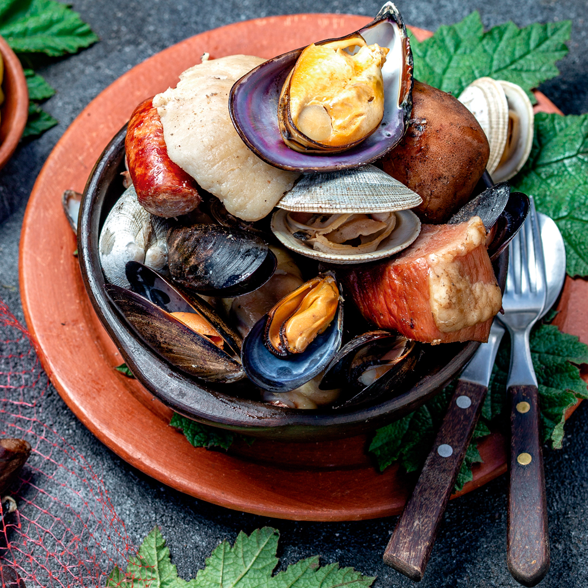

Curanto
Back to main page

Description
Curanto is a traditional food of Chiloé Archipelago that has spread to
the southern areas of Chile and Argentina, whose remains dated back about
11,525 ± 90 uncalibrated years before present.
It consists of seafood, meat, potatoes and vegetables and is
traditionally prepared in a hole, about a meter and a half
(approx. one and a half yards) deep, which is dug in the ground.
The bottom is covered with stones, heated in a bonfire until red.
Recipe :P
Ingredients
- 2 tablespoons olive oil
- 1 pound boneless skinless chicken thighs
- 1 pound mini Yukon Gold potatoes
- 1 red pepper sliced
- 1 medium white onion sliced
- 1 banana pepper or several small jalapenos thickly sliced
- 1 tablespoon garlic chopped
- 1 large Savoy cabbage leaves torn off
- 2 Spanish chorizo sausages cut in thirds
- 1 pound smoked pork spare ribs or pork chops
- 2 pounds clams
- 1 pound mussels
- 1 cup white wine
Steps!
- Heat oil in a large grill-proof wide pot over high heat on the barbecue.
- Add chicken and cook until lightly brown.
- Add potatoes, red peppers, onions, banana peppers and half of garlic, season with salt and pepper and cook for a few minutes or until softened.
- Cover tightly with cabbage leaves.
- Add sausage and spare ribs and cover with more cabbage leaves.
- Add clams, mussels and remaining garlic, pour wine over top and cover with a final layer of cabbage leaves.
- Cover pot tightly with a lid.
- Keep barbecue heat at about 325 F and cook for about 40 minutes or until everything is cooked and steaming hot.
- Remove pot from barbecue and put all the ingredients clams, mussels, sausage, chicken and pork on a platter.
- Serve cabbage as well.
- ENJOY!! :P